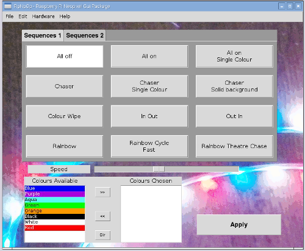

Simple graphical interface for controlling neopixel RGB LEDs on a Raspberry Pi
This project is currently work in progress. More documentation will be provided in future.
The user interface is intentionally basic in appearance using large buttons. This is so that it is suitable for use in a disco environment using a touchscreen (eg. using VNC from a touchscreen laptop).
The Apply button needs to be pressed for the changes to take effect, which allows the user to choose all the appropriate settings prior to applying them.

This is designed to run on a Raspberry Pi. It has been tested with the MyPifi Neopixel board.
Install the neopixel library from: https://github.com/richardghirst/rpi_ws281x.git
This needs to be installed for python3 The final step should be: sudo python3 setup.py install
Download the relevant files into a new folder named /home/pi/neopixel Copy the file rpnpgp.desktop to the /usr/share/applications directory. The icon should now appear on the normal start menu.
A more detailed install guide is provided in the file INSTALL.md
More information will be provided on www.penguintutor.com